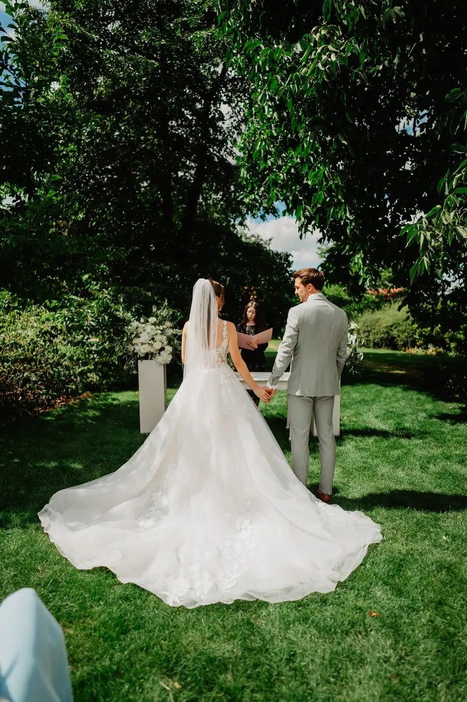
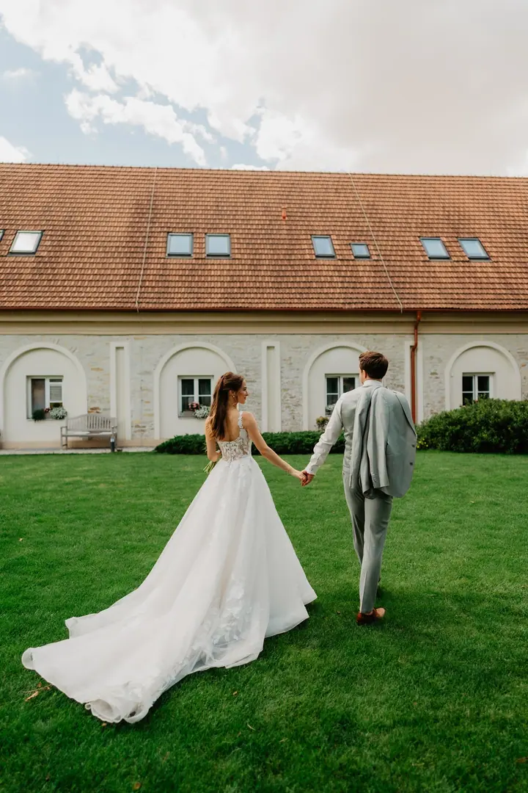
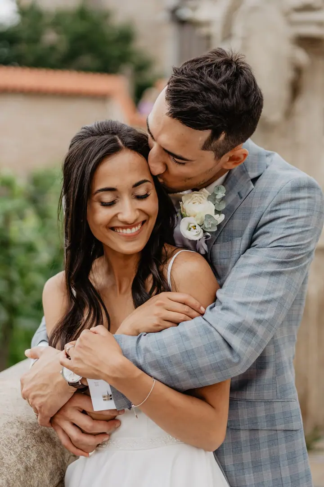

jedna
Svatby
Fotím převážně reportážním stylem a váš den skládám do uceleného příběhu fotek. Vybrat si můžete obřad (5 hodin) nebo celý den (10 až 12 hodin).

Svatební fotograf · Teplice, Ústí nad Labem, celá ČR

Jmenuji se Jakub Říha a jsem svatební fotograf z Teplic. Fotím převážně reportážně, takže zůstávám spíš v pozadí a nechávám váš den plynout po svém. Nejradši fotím svatby v přírodě, ale přijedu za vámi kamkoliv po celé republice.
Více o mně
Co fotím
jedna
Fotím převážně reportážním stylem a váš den skládám do uceleného příběhu fotek. Vybrat si můžete obřad (5 hodin) nebo celý den (10 až 12 hodin).
dvě
Přirozené momentky, ve kterých je vidět, co vás spojuje. Fotíme venku na místě, které si předem domluvíme.
tři
Párové, rodinné, těhotenské nebo vánoční focení v luxusním ateliéru v Ústí nad Labem. Stačí mi napsat o termín.
Kromě svateb a rodin fotím i produkty. Napište mi, co potřebujete nafotit, a domluvíme se.
Moje srdcová záležitost jsou svatby v přírodě.


Za objektivem
V posledních letech jsem naprosto podlehl svatební fotografii. Fotím převážně reportážním stylem, protože ten se ke svatbám hodí nejvíc. Snažím se zachytit přirozené chvíle a emoce tak, aby z fotek nakonec vznikl ucelený příběh vašeho dne.
Pocházím z Teplic a fotím po celé České republice. Na každou svatbu se pečlivě připravuji a beru ohled na místo i na atmosféru, jakou si přejete. Moje srdcová záležitost je příroda a svatby venku v přírodě.
Kromě svateb fotím také rodiny, páry, těhotenské focení a produkty, venku nebo v ateliéru v Ústí nad Labem. Vše je u mě o vzájemné dohodě, tak se klidně zeptejte na cokoliv.
Jakub
Napište mi nebo zavolejte, kdy a kde se budete brát. Ověřím termín a pošlu vám všechny potřebné informace.
Probereme spolu průběh dne, místo a vaše představy. Sejít se můžeme online, případně osobně v Teplicích.
Přijedu dobře připravený a fotím hlavně reportážně, nenápadně a bez zbytečného aranžování. Na společné portréty si najdeme klidnou chvíli.
Fotky pečlivě upravím a předám vám je v online galerii, kde si je můžete prohlížet a sdílet.
Portfolio
Fotografie jsou ilustrační
Otázky
Focení obřadu (5 hodin) stojí 17 000 Kč a celý den (10 až 12 hodin) 23 000 Kč. Cena se může lišit podle vašich požadavků a délky focení.
Z obřadu zhruba 250 a více upravených fotek, z celého dne přibližně 400 až 600. Všechny najdete v online galerii.
Napište mi nebo zavolejte a ověřím, jestli mám volno. Termín potvrdíte zálohou 3 000 Kč.
Ano, fotím po celé České republice. Rád za vámi přijedu kamkoliv, nejradši na svatby v přírodě.
Napište pár vět o tom, co si představujete. · +420 728 538 073